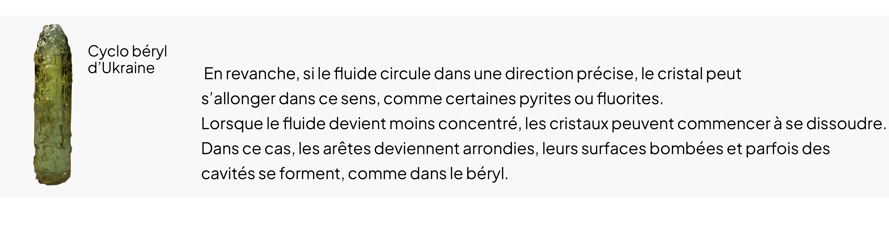

• Du parfait à l’imparfait
Les Anomalies
Les cristaux ne sont pas tous parfaits, il existe des anomalies comme celles de forme. Certains cristaux ont des formes convexes, c’est-à-dire bombées vers l’extérieur et d’autres concaves c’est-à-dire creux et arrondi à l’intérieur comme les cristaux de gypse. Parfois deux cristaux s’assemblent et n’en forment qu’un seul, on parle alors de macle qui peuvent être en forme de croix ou en forme de cœur.
• Un peu d’histoire…
Les formes de croissance
Depuis le XVIIIème siècle les scientifiques étudient la formation et le développement des cristaux allant d’un cristal presque parfait à une masse amorphe (désordonnée). On sait aujourd’hui que l’aspect du cristal dépend du temps de formation et de l’environnement dans lequel il se forme.
Croissance lente
Quand un cristal grandit lentement, ses atomes s’assemblent en couches régulières et donnent des surfaces planes. Les formes polyédriques régulières des minéraux sont issues d’une croissance lente.
Croissance rapide
Lorsqu’un cristal à une croissance rapide, on observe des formes plus complexes telles que :
Les formes en trémie : possédant des arêtes et des sommets bien formés mais aussi des surfaces creuses.
Les formes en dendrite : similaires à des flocons de neige, qui développent des excroissances.
Dans les deux cas, les faces du cristal n’ont pas eu le temps de bien se développer, en d’autres termes les atomes n’ont pas réussi à former des couches complètes.
Mis à part le temps, l’environnement joue un rôle sur l’aspect du cristal. Si plusieurs cristaux grandissent trop près les uns des autres, ils n’ont plus assez d’espace pour s’étendre et grandissent alors vers le haut formant des fibres.
D’autres, comme les agates prennent une forme arrondie parce qu’ils se forment à l’intérieur de bulles de gaz piégées dans la lave en refroidissant. Au fil du temps, des minéraux dissous dans l’eau s’infiltrent dans ces cavités et s’y déposent en couches successives.
Les formes cristallines : une question d’environnement
La croissance cristalline peut être influencée par la circulation de fluides contenant les éléments nécessaires à la formation des minéraux. Lorsque le fluide circule de façon homogène, le cristal adopte sa forme naturelle selon les lois de la cristallographie.
